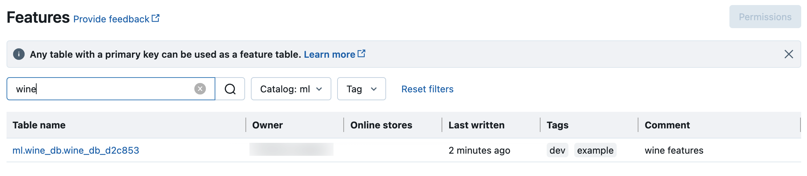

Feature Engineering in Unity Catalog
This page describes how to create and work with feature tables in Unity Catalog.
This page applies only to workspaces that are enabled for Unity Catalog. If your workspace is not enabled for Unity Catalog, see Work with features in Workspace Feature Store.
Requirements
Feature Engineering in Unity Catalog requires Databricks Runtime 13.2 ML or above. In addition, the Unity Catalog metastore must have Privilege Model Version 1.0.
It is possible to use Feature Engineering in Unity Catalog in Databricks Runtime 13.1 ML and below with the following limitations:
drop_tableis not supported. Use SQL command to delete feature table in Unity Catalog.Catalog, schema, and table names can contain only alphanumeric characters and underscores (_).
Logging models to Unity Catalog is not supported.
Install Feature Engineering in Unity Catalog Python client
Feature Engineering in Unity Catalog provides a Python client FeatureEngineeringClient. The class is available on PyPI with the databricks-feature-engineering package and is pre-installed in Databricks Runtime 13.2 ML and above. If you are using a non-ML Databricks Runtime, you need to install the client manually. Use the compatibility matrix to find the right version for your Databricks Runtime version.
%pip install databricks-feature-engineering
dbutils.library.restartPython()
Create a catalog and a schema for feature tables in Unity Catalog
You must create a new catalog or use an existing catalog for feature tables.
To create a new catalog, you must have the CREATE CATALOG privilege on the metastore.
CREATE CATALOG IF NOT EXISTS <catalog-name>
To use an existing catalog, you must have the USE CATALOG privilege on the catalog.
USE CATALOG <catalog-name>
Feature tables in Unity Catalog must be stored in a schema. To create a new schema in the catalog, you must have the CREATE SCHEMA privilege on the catalog.
CREATE SCHEMA IF NOT EXISTS <schema-name>
Create a feature table in Unity Catalog
Note
You can also use an existing Delta table in Unity Catalog as a feature table. See Use an existing Delta table in Unity Catalog as a feature table.
Feature tables in Unity Catalog are Delta tables managed by Unity Catalog. Feature tables must have a primary key. The name of a feature table in Unity Catalog has a three-level structure, <catalog-name>.<schema-name>.<table-name>.
You can use Databricks SQL or the Python FeatureEngineeringClient to create feature tables in Unity Catalog.
You can use any Delta table with a Primary Key Constraint as a feature table. The following code shows how to create a table with a primary key:
CREATE TABLE ml.recommender_system.customer_features (
customer_id int NOT NULL,
feat1 long,
feat2 varchar(100),
CONSTRAINT customer_features_pk PRIMARY KEY (customer_id)
);
To create a time series feature table, add a time column as a primary key column and specify the TIMESERIES keyword. The TIMESERIES keyword requires Databricks Runtime 13.3 LTS or above.
CREATE TABLE ml.recommender_system.customer_features (
customer_id int NOT NULL,
ts timestamp NOT NULL,
feat1 long,
feat2 varchar(100),
CONSTRAINT customer_features_pk PRIMARY KEY (customer_id, ts TIMESERIES)
);
After the table is created, you can write data to it in the same way you write other Delta tables, and it can be used as a feature table.
For details about the commands and parameters used in the following examples, see the Feature Store Python API reference.
Write the Python functions to compute the features. The output of each function should be an Apache Spark DataFrame with a unique primary key. The primary key can consist of one or more columns.
Create a feature table by instantiating a
FeatureEngineeringClientand usingcreate_table.Populate the feature table using
write_table.
from databricks.feature_engineering import FeatureEngineeringClient
fe = FeatureEngineeringClient()
# Prepare feature DataFrame
def compute_customer_features(data):
''' Feature computation code returns a DataFrame with 'customer_id' as primary key'''
pass
customer_features_df = compute_customer_features(df)
# Create feature table with `customer_id` as the primary key.
# Take schema from DataFrame output by compute_customer_features
customer_feature_table = fe.create_table(
name='ml.recommender_system.customer_features',
primary_keys='customer_id',
schema=customer_features_df.schema,
description='Customer features'
)
# An alternative is to use `create_table` and specify the `df` argument.
# This code automatically saves the features to the underlying Delta table.
# customer_feature_table = fe.create_table(
# ...
# df=customer_features_df,
# ...
# )
# To use a composite primary key, pass all primary key columns in the create_table call
# customer_feature_table = fe.create_table(
# ...
# primary_keys=['customer_id', 'date'],
# ...
# )
# To create a time series table, set the timeseries_columns argument
# customer_feature_table = fe.create_table(
# ...
# primary_keys=['customer_id', 'date'],
# timeseries_columns='date',
# ...
# )
Use an existing Delta table in Unity Catalog as a feature table
Any Delta table in Unity Catalog with a primary key can be a feature table in Unity Catalog, and you can use the Feature Store UI and API with the table.
If an existing Delta table in Unity Catalog does not have a Primary Key Constraint, you can create one as follows:
Set primary key columns to
NOT NULL. For each primary key column, run:ALTER TABLE <full_table_name> ALTER COLUMN <pk_col_name> SET NOT NULL
Alter the table to add the Primary Key Constraint:
ALTER TABLE <full_table_name> ADD CONSTRAINT <pk_name> PRIMARY KEY(pk_col1, pk_col2, ...)
pk_nameis the name of the Primary Key Constraint. By convention, you can use the table name (without schema and catalog) with a_pksuffix. For example, a table with the name"ml.recommender_system.customer_features"would havecustomer_features_pkas the name of its Primary Key Constraint.To make the table a time series feature table, specify the TIMESERIES keyword on one of the primary key columns, as follows:
ALTER TABLE <full_table_name> ADD CONSTRAINT <pk_name> PRIMARY KEY(pk_col1 TIMESERIES, pk_col2, ...)
After you add the Primary Key Constraint on the table, the table appears in the Feature Store UI and you can use it as a feature table.
Note
Only the table owner can declare Primary Key Constraints. The owner’s name is displayed on the table detail page of Catalog Explorer.
You need to verify the data type in the Delta table is supported by Feature Store. See Supported data types.
The TIMESERIES keyword requires Databricks Runtime 13.3 LTS or above.
Control access to feature tables in Unity Catalog
Access control for feature tables in Unity Catalog is managed by Unity Catalog. See Unity Catalog privileges.
Update a feature table in Unity Catalog
You can update a feature table in Unity Catalog by adding new features or by modifying specific rows based on the primary key.
The following feature table metadata should not be updated:
Primary key.
Partition key.
Name or data type of an existing feature.
Altering them will cause downstream pipelines that use features for training and serving models to break.
Add new features to an existing feature table in Unity Catalog
You can add new features to an existing feature table in one of two ways:
Update the existing feature computation function and run
write_tablewith the returned DataFrame. This updates the feature table schema and merges new feature values based on the primary key.Create a new feature computation function to calculate the new feature values. The DataFrame returned by this new computation function must contain the feature tables’s primary keys and partition keys (if defined). Run
write_tablewith the DataFrame to write the new features to the existing feature table, using the same primary key.
Update only specific rows in a feature table
Use mode = "merge" in write_table. Rows whose primary key does not exist in the DataFrame sent in the write_table call remain unchanged.
from databricks.feature_engineering import FeatureEngineeringClient
fe = FeatureEngineeringClient()
fe.write_table(
name='ml.recommender_system.customer_features',
df = customer_features_df,
mode = 'merge'
)
Schedule a job to update a feature table
To ensure that features in feature tables always have the most recent values, Databricks recommends that you create a job that runs a notebook to update your feature table on a regular basis, such as every day. If you already have a non-scheduled job created, you can convert it to a scheduled job to make sure the feature values are always up-to-date.
Code to update a feature table uses mode='merge', as shown in the following example.
from databricks.feature_engineering import FeatureEngineeringClient
fe = FeatureEngineeringClient()
customer_features_df = compute_customer_features(data)
fe.write_table(
df=customer_features_df,
name='ml.recommender_system.customer_features',
mode='merge'
)
Store past values of daily features
Define a feature table with a composite primary key. Include the date in the primary key. For example, for a feature table customer_features, you might use a composite primary key (date, customer_id) and partition key date for efficient reads.
CREATE TABLE ml.recommender_system.customer_features (
customer_id int NOT NULL,
`date` date NOT NULL,
feat1 long,
feat2 varchar(100),
CONSTRAINT customer_features_pk PRIMARY KEY (`date`, customer_id)
)
PARTITIONED BY (`date`)
COMMENT "Customer features";
from databricks.feature_engineering import FeatureEngineeringClient
fe = FeatureEngineeringClient()
fe.create_table(
name='ml.recommender_system.customer_features',
primary_keys=['date', 'customer_id'],
partition_columns=['date'],
schema=customer_features_df.schema,
description='Customer features'
)
You can then create code to read from the feature table filtering date to the time period of interest.
You can also create a time series feature table which enables point-in-time lookups when you use create_training_set or score_batch. See Create a feature table in Unity Catalog.
To keep the feature table up to date, set up a regularly scheduled job to write features, or stream new feature values into the feature table.
Create a streaming feature computation pipeline to update features
To create a streaming feature computation pipeline, pass a streaming DataFrame as an argument to write_table. This method returns a StreamingQuery object.
def compute_additional_customer_features(data):
''' Returns Streaming DataFrame
'''
pass
from databricks.feature_engineering import FeatureEngineeringClient
fe = FeatureEngineeringClient()
customer_transactions = spark.readStream.load("dbfs:/events/customer_transactions")
stream_df = compute_additional_customer_features(customer_transactions)
fe.write_table(
df=stream_df,
name='ml.recommender_system.customer_features',
mode='merge'
)
Read from a feature table in Unity Catalog
Use read_table to read feature values.
from databricks.feature_engineering import FeatureEngineeringClient
fe = FeatureEngineeringClient()
customer_features_df = fe.read_table(
name='ml.recommender_system.customer_features',
)
Search and browse feature tables in Unity Catalog
Use the Features UI to search for or browse feature tables in Unity Catalog.
Click Features in the sidebar to display the Features UI.
Select catalog with the catalog selector to view all of the available feature tables in that catalog. In the search box, enter all or part of the name of a feature table, a feature, or a comment. You can also enter all or part of the key or value of a tag. Search text is case-insensitive.

Get metadata of feature tables in Unity Catalog
Use get_table to get feature table metadata.
from databricks.feature_engineering import FeatureEngineeringClient
fe = FeatureEngineeringClient()
ft = fe.get_table(name="ml.recommender_system.user_feature_table")
print(ft.features)
Tags of feature tables in Unity Catalog
Tags are key-value pairs that you can create and use to search for feature tables. You can create, edit, and delete tags using the Catalog Explorer UI or the Feature Store Python API.
Create feature table with tag using the Feature Store Python API
from databricks.feature_engineering import FeatureEngineeringClient
fe = FeatureEngineeringClient()
customer_feature_table = fe.create_table(
# ...
tags={"tag_key_1": "tag_value_1", "tag_key_2": "tag_value_2", ...},
# ...
)
Add, update, and delete tags using the Feature Store Python API
from databricks.feature_engineering import FeatureEngineeringClient
fe = FeatureEngineeringClient()
# Upsert a tag
fe.set_feature_table_tag(name="my_table", key="quality", value="gold")
# Delete a tag
fe.delete_feature_table_tag(name="my_table", key="quality")
Delete a feature table in Unity Catalog
You can delete a feature table in Unity Catalog by directly deleting the Delta table in Unity Catalog using the Catalog Explorer or using the Feature Store Python API.
Note
Deleting a feature table can lead to unexpected failures in upstream producers and downstream consumers (models, endpoints, and scheduled jobs). You must delete published online stores with your cloud provider.
When you delete a feature table in Unity Catalog, the underlying Delta table is also dropped.
drop_tableis not supported in Databricks Runtime 13.1 ML or below. Use SQL command to delete the table.
You can use Databricks SQL or FeatureEngineeringClient.drop_table to delete a feature table in Unity Catalog:
DROP TABLE ml.recommender_system.customer_features;
from databricks.feature_engineering import FeatureEngineeringClient
fe = FeatureEngineeringClient()
fe.drop_table(
name='ml.recommender_system.customer_features'
)
Upgrade a workspace feature table to Unity Catalog
First, upgrade the underlying workspace Delta table by following Upgrade tables and views to Unity Catalog.
After the underlying table and data are available in Unity Catalog, you can upgrade the workspace feature table metadata to Unity Catalog by using upgrade_workspace_table. Databricks recommends always using the latest version of databricks-feature-engineering for this operation, regardless of the Databricks Runtime version you are using.
%pip install databricks-feature-engineering --upgrade
dbutils.library.restartPython()
from databricks.feature_engineering import UpgradeClient
upgrade_client = UpgradeClient()
upgrade_client.upgrade_workspace_table(
source_workspace_table='recommender_system.customer_features',
target_uc_table='ml.recommender_system.customer_features'
)
The following metadata is upgraded to Unity Catalog:
Primary keys
Timeseries columns
Table and column comments (descriptions)
Table and column tags
Notebook and job lineage
If the target table has existing table or column comments that are different from the source table, the upgrade method skips upgrading comments and logs a warning. If you are using version 0.1.2 or below of databricks-feature-engineering, an error is thrown and the upgrade does not run. For all other metadata, a mismatch between the target table and source table causes an error and prevents the upgrade. To bypass the error and overwrite any existing metadata on the target Unity Catalog table, pass overwrite = True to the API:
upgrade_client.upgrade_workspace_table(
source_workspace_table='recommender_system.customer_features',
target_uc_table='ml.recommender_system.customer_features',
overwrite=True
)
Note
Before calling this API, you must first upgrade the underlying workspace Delta table to Unity Catalog.
Upgrading tags and time series columns is not supported in Databricks Runtime 13.2 ML and below.
Remember to notify producers and consumers of the upgraded feature table to start using the new table name in Unity Catalog. If the target table in Unity Catalog was upgraded using
CREATE TABLE AS SELECTor a similar way that cloned the source table, updates to the source table are not automatically synchronized in the target table.
Supported data types
Feature Store with Unity Catalog supports the following PySpark data types:
IntegerTypeFloatTypeBooleanTypeStringTypeDoubleTypeLongTypeTimestampTypeDateTypeShortTypeArrayTypeBinaryTypeDecimalTypeMapType
The data types listed above support feature types that are common in machine learning applications. For example:
You can store dense vectors, tensors, and embeddings as
ArrayType.You can store sparse vectors, tensors, and embeddings as
MapType.You can store text as
StringType.
When published to online stores, ArrayType and MapType features are stored in JSON format.